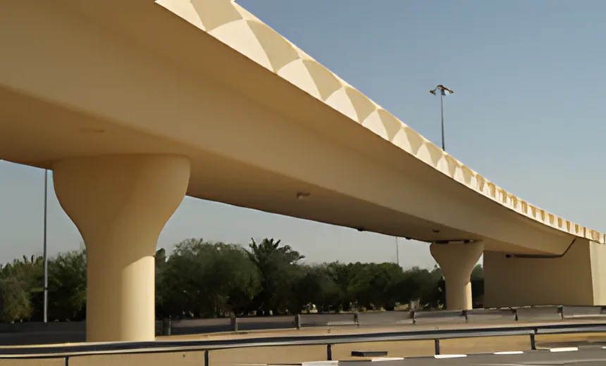
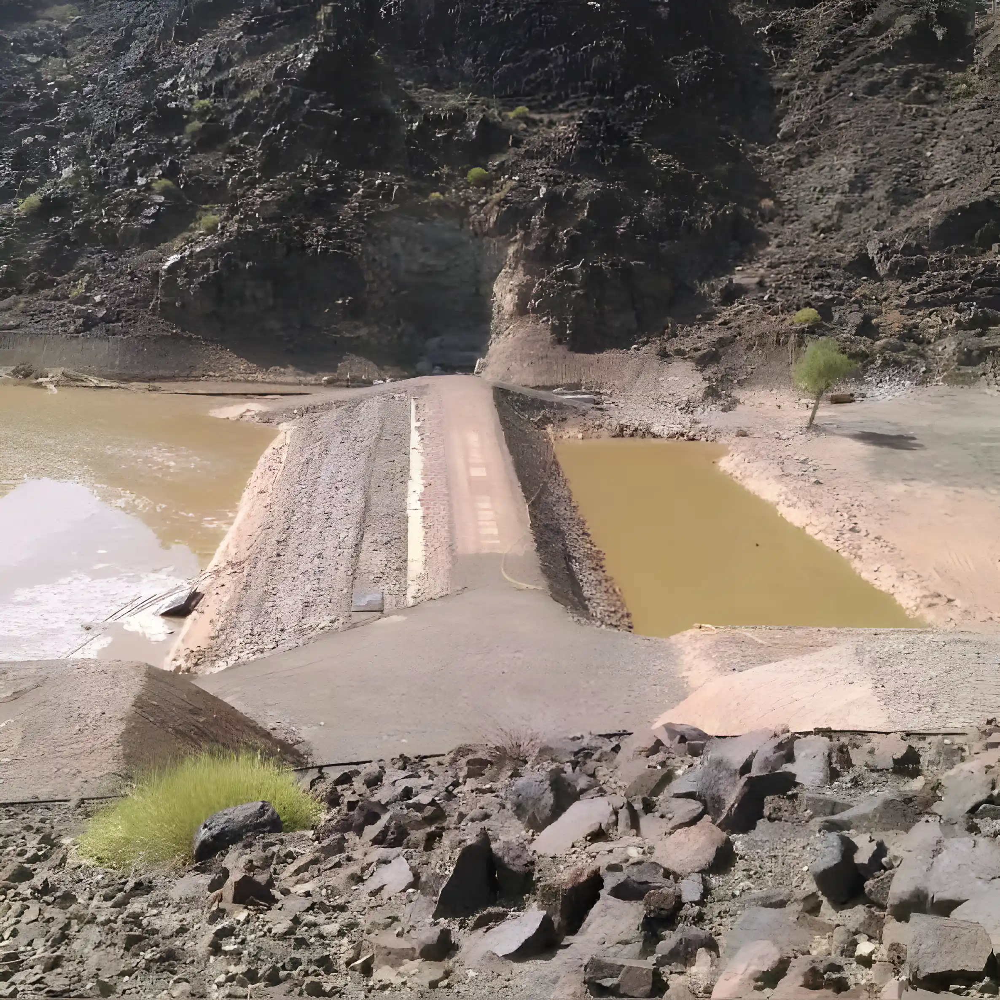
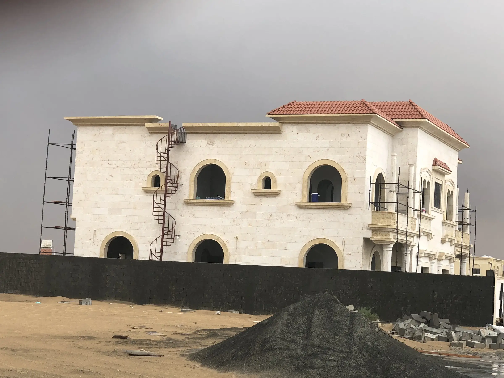

يونايتدإنجنيرز
مقاولات مبانٍ وطرق في الفجيرة منذ 2009. ننفّذ الطرق والسدود وأساسات الخزانات والمباني على الساحل الشرقي، بشاحناتنا ومن موادنا.
الصورة أعمال محطة BPGIC، الفجيرةتكسية صخرية على الشاطئشارع حمد بن عبدالله، الفجيرةGoogle 4.5 · 39 تقييماً

من نحن
منذ 2009 ننفّذ الطرق والسدود وأساسات الخزانات والمباني للوزارات والبلديات ومحطات النفط والملّاك على الساحل الشرقي.
يونايتد إنجنيرز شركة مقاولات مدنية مقرّها شارع حمد بن عبدالله في الفجيرة. نتولّى الإنشاء والترميم والتجديد والصيانة في الأعمال المدنية والإنشائية والمباني، ونسلّم في الموعد المحدد بالعقد، حسب المواصفات والكودات المعتمدة.
أسطولنا ينقل المواد، ومهندسونا يديرون المواقع، والاستشاري يحصل على كل المستندات التي يطلبها.

37مشروعاً منجزاً في سجلّنا، من دبا إلى الذيد.
4إمارات عملنا فيها: الفجيرة، الشارقة، عجمان ورأس الخيمة.
2009سنة افتتاحنا في الفجيرة.
المشاريع
كل مشروع أنجزناه: أين يقع، والاستشاري المشرف عليه. أسماء المشاريع كما تُكتب في العقود.
آخر المشاريع ENOC 1504, FujairahHamad Bin Abdullah RoadBPGIC Fujairah Terminal, Phase 2Dhaid Wild Center, Phase 2Sharjah villas
| الرقم | المشروع | الموقع | الاستشاري | النوع | Photo |
|---|---|---|---|---|---|
| 01 | Sheikh Khalifa Central Hospital صورة | الفجيرة | Consolidated Consultant Group | مبانٍ |  |
| 02 | BPGIC Fujairah Terminal, Phase 1 صورة | الفجيرة | MUC | نفط وطاقة |  |
| 03 | EDJ-447 Bridge صورة | عجمان | — | طرق وجسور |  |
| 04 | ADNOC Petrol Station صورة | الفجيرة | — | طرق وجسور |  |
| 05 | Wadi Al Ejili صورة | رأس الخيمة | — | مياه وسدود |  |
| 06 | Hamad Bin Abdullah Road | الفجيرة | Rafik Khori | طرق وجسور | |
| 07 | Kalba & Wadi Hilow Dams | كلباء، الشارقة | CHSS | مياه وسدود | |
| 08 | ADP Zoo | الذيد، الشارقة | Khatib & Alami | مبانٍ | |
| 09 | Al Hayl Water Tank Service Road | الفجيرة | ILF / Transco | طرق وجسور | |
| 10 | VTTI Crude Oil Terminal | الفجيرة | Eastern | نفط وطاقة | |
| 11 | VTTI CPU Area, Fujairah Refinery | الفجيرة | Eastern | نفط وطاقة | |
| 12 | Vopak Horizon Fujairah / Black Pearl | الفجيرة | ENOC | نفط وطاقة | |
| 13 | Widening of Basra Road, Hilton | الفجيرة | MOPW | طرق وجسور | |
| 14 | Dhaid Wild Center | الذيد، الشارقة | MUC | مبانٍ | |
| 15 | Crusher Service Roads | الفجيرة | Fujairah Municipality | طرق وجسور | |
| 16 | 3,000 m² Warehouse, Al Hayl Workshop | الفجيرة | Eastern | مبانٍ | |
| 17 | Al Lehfiah Mountain Wild Center | كلباء، الشارقة | Idroose | مبانٍ | |
| 18 | Water Supply Distribution Network | دبا | Transco | مياه وسدود | |
| 19 | Water Supply Distribution Network | الفجيرة | ILF / Transco | مياه وسدود | |
| 20 | Al Jurf Internal Road Works | عجمان | MOPW | طرق وجسور | |
| 21 | Madhab Internal Works | الفجيرة | MOPW | طرق وجسور | |
| 22 | Sakamkam Basin Dams | الفجيرة | HSE | مياه وسدود | |
| 23 | Sewage Treatment Plant | خورفكان | MOPW | مياه وسدود | |
| 24 | Sewage Treatment Plant | رأس الخيمة | MOPW | مياه وسدود | |
| 25 | Fujairah Power Plant | الفجيرة | Transco | نفط وطاقة | |
| 26 | Khorfakkan – Shis Road | خورفكان | Halcrow | طرق وجسور | |
| 27 | Sheikh Zayed Grand Mosque | الفجيرة | MOPW | مبانٍ | |
| 28 | Fujairah Airport Road | الفجيرة | Idroose | طرق وجسور | |
| 29 | Fujairah – Masafi Road Upgrading | الفجيرة | CONSER | طرق وجسور | |
| 30 | Gulf Petrochem Oil Terminal | الفجيرة | Eastern | نفط وطاقة | |
| 31 | HH Sheikh Khalifa Road | الفجيرة | CONSER | طرق وجسور | |
| 32 | Kalba Truck Ring Road | كلباء | Idroose | طرق وجسور | |
| 33 | Khorfakkan Truck Ring Road, Phase 2 | خورفكان | Halcrow | طرق وجسور | |
| 34 | ENOC Oil Tanks | الفجيرة | Eastern | نفط وطاقة | |
| 35 | Ajman University Parking Area | الفجيرة | East Coast | طرق وجسور | |
| 36 | Al Mudafi Internal Roads | الفجيرة | Halcrow | طرق وجسور | |
| 37 | Fujairah Mall construction works | الفجيرة | ERGA | مبانٍ |
معروض 12 من 37
من مواقعنا
صور من مواقع عملنا: خزانات، طرق، فلل وسدود. اسحب أو استخدم الأسهم.




ماذا نعمل
أربعة مجالات عمل، فريق واحد، ومكتب واحد في الفجيرة.
الطرق والشوارع
طرق جديدة، توسعة طرق، طرق داخلية، طرق دائرية للشاحنات، طرق خدمة ومواقف سيارات، من الأعمال الترابية حتى آخر طبقة أسفلت.
التفاصيل →مقاولات المباني
فلل ومستودعات ومبانٍ حكومية، مع أعمال الترميم والتجديد والصيانة. أعمال مدنية وإنشائية في عقد واحد.
التفاصيل →
النقل
شاحناتنا ومقطوراتنا الخاصة، يقودها ويصونها فريقنا، تنقل المواد إلى المواقع في المنطقة الشرقية.
التفاصيل →
مواد البناء والطرق
نورّد مواد البناء والطرق للسوق المحلي ونوصلها بأسطولنا، في اليوم الذي يحتاجها فيه الموقع.
التفاصيل →معدّاتنا وشاحناتنا ملكنا.
حفّارات ومداحل وجريدرات وشاحنات ومقطورات نملكها ويصونها فنّيونا، فلا ينتظر الموقع شركة تأجير.

الجودة والسلامة
ما يطلبه الاستشاري عند التأهيل المسبق، جاهز في ملفاتنا.
- ISO 9001نظام إدارة الجودة، بتدقيق QAQC.
- ISO 14001نظام الإدارة البيئية، بتدقيق QAQC.
- OHSAS 18001نظام إدارة الصحة والسلامة المهنية، بشهادة من QAQC.
- الوزارةشهادة تأهيل من وزارة تطوير البنية التحتية.
- فحص الموادتُفحص مواد البناء كل 3 إلى 6 أشهر في بلدية الفجيرة أو مختبر معتمد.
- سلامة الموقعمهندسو السلامة يزورون كل موقع، وكل عمل يبدأ باجتماع سلامة.
على Google
4.5 من 39 تقييماً. ثلاثة منها كما كُتبت بالإنجليزية:
One of the best road contractor in east coast area and UAE. Recommended if you are looking for trusted companyThe best choice where you can find the quilified and skilled team. They have ethical standards to meet deadlines.One of the best firm for civil works, head a great experience. Professional staff with high commitmentعندك مناقصة طريق أو خزانات أو فيلا؟
أرسل المخططات وجدول الكميات إلى info@uengineers.com، أو اتصل بالمكتب ونخبرك متى يجهز السعر.
مكتبنا في الفجيرة
مفتوح الآنمكتب M05، بناية نما، شارع حمد بن عبدالله، الفجيرة
ص.ب 4055، الفجيرة، الإمارات
| الأحد | 8–2 و 6–9 مساءً |
| الإثنين | 8–2 و 6–9 مساءً |
| الثلاثاء | 8–2 و 6–9 مساءً |
| الأربعاء | 8–2 و 6–9 مساءً |
| الخميس | 8–2 و 6–9 مساءً |
| الجمعة | 8–2 ظهراً |
| السبت | مغلق |
- المكتب 09 223 5600
- المتحرك 050 540 6860
- الفاكس 09 223 5601
- البريد info@uengineers.com